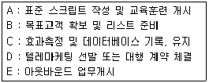
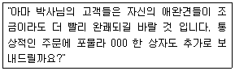
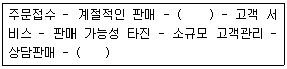

텔레마케팅관리사 (2003-08-10 기출문제)
1과목: 판매관리
1. 텔레마케터가 잠재고객에 판매를 성공시키기 위한 행위 중 옳지 않은 것은?
- 잠재고객의 이름, 나이, 학력, 취미, 직업, 성격 등을 상세히 알고 난 후 접촉해야 한다.
- 제품설명(demonstration)시에 상품 구입의 합리적 이유뿐만 아니라 어느 정도 극적인 장면을 연출할 필요가 있다.
- 친구, 이웃사람, 회사의 직원, 현재고객으로부터 잠재고객의 정보를 얻는다.
- 잠재고객의 반대질문이 나오지 않도록 설명을 계속해야 한다.
(정답률: 알수없음)

2. 고객관계 관리를 잘하기 위하여 가장 중요한 것은?
- 광고를 많이 하여야 한다.
- 판매가격이 저렴해야 한다.
- 맴버십(membership) 같은 고객보상 프로그램을 마련한다.
- 대리점을 많이 설치해야 한다.
(정답률: 알수없음)
3. 스크립트 작성에 관한 것이다. 이 중 4C의 원칙이 아닌것은?
- Conversational - 매끄러운 회화체
- Clean - 깔끔하게
- Concise - 명료하고 간결하게
- Convicing - 논리적으로 설득력 있게
(정답률: 알수없음)
4. B to B 아웃바운드 텔레마케팅 중 고객이 가장 선호하는 시간대는 언제인가?
- 오전9시∼10시
- 오전12 ∼ 오후1시
- 오후3시 ∼ 오후4시
- 오후5시 ∼ 오후6시
(정답률: 알수없음)
5. 아웃바운드 다이얼링 방식에 대한 설명으로 옳은 것은?
- 매뉴얼 다이얼링: 상담원이 입력해둔 매뉴얼대로 시스템이 직접 다이얼링하는 기법
- 미리보기 다이얼링: 고객과 통화연결이 되었을 때에만 상담원에게 연결해 주는 방식
- 프로그레시브 다이얼링: 전화를 받을 수 있는 아웃바운드 상담원이 있을 경우에만 시스템이 자동으로 전화를 걸어주는 방식
- 파워 다이얼링: 상담원이 전화번호를 보고 직접 다이얼링 하는 방식
(정답률: 알수없음)
6. CRM을 위한 데이터 베이스에서 가장 중요한 고객은?
- 신규고객
- 기존고객
- 잠재고객
- 가망고객
(정답률: 알수없음)
7. 해피 콜에 대한 설명으로 옳지 않은 것은?
- 고객과의 관계 개선을 통해 추가판매를 유도하고 고객만족도를 높여 충성 고객화한다.
- 감사전화, 서비스 만족확인 전화, 이벤트, 캠페인 지지전화 등이 이에 속한다.
- 해피 콜의 지속적인 운영관리를 위해 대상 데이터 베이스를 유지하도록 한다.
- 해피 콜은 소비자와의 최종 커뮤니케이션 단계로 해피 콜 이후의 조치사항은 특별히 필요없다.
(정답률: 알수없음)
8. 고객의 참여관점에 따른 고객유형에 대한 설명으로 옳지 않은 것은?
- 직접고객 - 제품제공자로부터 제품이나 서비스를 구입하는 사람
- 의사결정고객 - 직접적으로 제품이나 서비스를 구입하여 돈을 지불하며 구매에 따른 모든 의사결정을 하는 사람
- 의견선도고객 - 제품이나 서비스를 구매하기 보다는 심사, 모니터링 등에 영향을 미치는 고객
- 내부고객 - 회사 내부의 종업원
(정답률: 알수없음)
9. 텔레마케팅 관련용어와 이에 대한 설명으로 연결이 잘못된 것은?
- 콜 접촉률 - 아웃바운드 텔레마케팅을 실행한 결과 고객과 접촉한 비율
- After Call Work - 고객과의 전화 통화 후 상담원이 처리해야 할 업무
- Junk Phone Call - 무작정의 판매유도로 상대방의 무관심 또는 무반응의 통화
- 1580서비스 - 발신번호확인 서비스
(정답률: 알수없음)
10. 충성고객이 기업에 미치는 영향 중 장점이라고 볼 수 없는 것은?
- 새로운 고객창출의 용이성
- 보다 우수한 제품 및 서비스의 개발 및 제공
- 충성고객유지 관리를 위한 비용의 증대
- 기업이 추구하는 고객관리를 위한 새로운 전략 수립이 용이
(정답률: 알수없음)
11. 신규고객유지율, 기존고객의 보유율, 고객반복 이용률 등의 효과를 측정하는데 사용되는 척도는?
- 고객신뢰도
- 고객반응률
- 고객기여도
- 고객성장률
(정답률: 알수없음)
12. 아웃바운드 텔레마케터에게 요구되는 프로모션 능력으로 보기 어려운 것은?
- 상품 및 서비스에 대한 사전 지식 숙지
- 고객에게 호감을 줄 수 있는 경청자세 기법 숙달
- 고객의 반론이나 거절에 순응하는 자세
- 고객과의 친밀한 관계형성 자세
(정답률: 알수없음)
13. 아웃바운드 텔레마케팅 도입절차가 올바른 순서대로 나열된 것은?

- B-D-A-E-C
- B-E-A-D-C
- A-B-C-D-E
- B-C-D-E-A
(정답률: 알수없음)
14. 데이터베이스 마케팅의 정의를 설명한 것 중 옳지 않는 것은?
- 컴퓨터에 수록된 고객 데이터베이스를 바탕으로 한다
- 고객과의 장기적인 릴레이션 구축을 위한 활동이다.
- 고객에게 보다 질 높은 서비스를 제공하고자 한다.
- 적정상품을 대량으로 생산하여 대량으로 판매한다.
(정답률: 알수없음)
15. 텔레마케팅 관련 용어에 대한 설명중 옳지 않은 것은?
- AHT - 텔레마케터가 각기 통화할 때 평균적으로 걸리는 시간
- ACD - 통화를 받으면서 대기하는 통화를 앞서 걸려온 순서대로 정렬하여 상담원을 연결시킴
- BURN-OUT - 텔레마케터가 성과나 동기부여가 현저하게 저하되어 있는 상태
- CALL ROUTING - 전화통화가 자동적으로 만들어진 순서에 따라 의도된 지점까지 움직여가는 것
(정답률: 알수없음)
16. 아웃바운드 텔레마케팅의 특성으로 옳지 않은 것은?
- 고객이나 잠재고객에게 전화를 거는 형태이다.
- DB관리를 통한 적합한 대상 선정이 중요하다.
- 인바운드 텔레마케팅보다 비용이 많이 든다.
- 전문적인 텔레마케터가 요구된다.
(정답률: 알수없음)
17. 아웃바운드 텔레마케터에게 요구되는 개인적 자질로 보기 어려운 것은?
- 긍정적인 사고방식
- 맑고 생동감 있는 목소리
- 뚜렷한 목표의식과 시간관리 능력
- 고객의 거절이나 반론에 순응하는 자세
(정답률: 알수없음)
18. 기존고객을 대상으로 하는 데이터베이스 마케팅 전략으로 적합하지 않은 것은?
- 고객 재활성화 전략
- 고객 애호도 제고 전략
- 고객유지전략
- 교차판매전략
(정답률: 알수없음)
19. 아웃바운드 텔레마케팅의 효과적인 운영방법으로 적합한 것은?
- 가능한 많은 양의 고객DB를 텔레마케터에게 배포한다
- 1차 거절한 고객DB는 재활용해서는 안 된다.
- 가능한 콜량을 최소화하고 한 콜 한 콜에 집중적인 노력을 기울인다.
- 구체적인 목표를 설정하고 일,주,월 단위로 목표관리를 한다.
(정답률: 알수없음)
20. 아웃바운드 세일즈 상담시에는 무엇보다 고객과의 관계형성이 중요하다. 다음중 고객과의 관계를 형성하는 방법으로 바람직하지 못한 것은?
- 고객과 이야기 할 수 있는 공통적인 화제를 찾는다.
- 인사는 밝고 친근감 있게 한다.
- 가벼운 첫인사 후 바로 본론으로 들어 간다.
- 고객의 신분에 맞는 존칭어를 활용한다.
(정답률: 알수없음)
21. 텔레마케팅 관련 용어에 대한 설명으로 옳은 것은?
- ERLANG - 전화통화량을 측정한 수치를 밝힌다.
- 트렁크라인 - 전화를 사용하려는 사람에게 특정한 유형의 전화를 사용하지 못하게 하는 시스템이다.
- VMS - PC내의 음성처리기능을 수행하는 인쇄회로기판
- WORK LORD - 상담원이 고객과의 전화통화를 마친 후 새로운 전화를 받아처리 할 때까지 그 사이에 알게되는 작업상태
(정답률: 알수없음)
22. 마케팅믹스의 정의를 가장 올바르게 나타낸 것은?
- 표적시장에서 마케팅목표를 달성하기 위하여 기업이 활용하는 마케팅 도구의 집합이다.
- 마케팅의 통제 불가능한 환경을 분석하는 것이다.
- 인사, 재무, 생산, 조직을 통합하는 것이다.
- 비영리마케팅을 추구하는것이다.
(정답률: 알수없음)
23. 텔레마케팅의 효과로 옳지 않은 것은?
- 1:1서비스를 통한 고객욕구파악
- 원가 절감과 효율의 극대화
- 시장조사와 판매전략조정
- 콜센터의 개설여부결정
(정답률: 알수없음)
24. 고객관계관리(Customer Relationship Management)의 특징이 아닌 것은?
- 고객유지에 중점을 둔다.
- 고객점유율에 중점을 둔다.
- 고객관계에 중점을 둔다.
- 판매관리에 중점을 둔다.
(정답률: 알수없음)
25. 텔레마케팅의 목적으로 볼 수 없는 것은?
- 고객의 프라이버시 파악
- 친밀한 고객관리 및 고객서비스의 증대
- 판매경비의 절감 및 마케팅 효율의 증대
- 판매기회 확대 및 시장조사
(정답률: 알수없음)
2과목: 시장조사
26. 전화질문지 설계방법으로 옳지 않은 것은?
- 갑작스러운 전화에 불쾌해 하지 않도록 부드럽고 정중한 언어표현을 구사할 수 있는 질문 스크립트를 개발한다.
- 4∼5개 이상의 비슷한 예를 들고 하나를 선택하도록 한다.
- 다른 조사방법에 비하여 비교적 응답의 길이가 짧아서 효과가 떨어지는 경향이 있으므로 가능한 한 주관식 질문은 줄이는 것이 좋다.
- 양자택일형을 통해 구체적인 답변에 접근하는 방법을 취하도록 한다.
(정답률: 알수없음)
27. 신뢰성 있는 조사가 이루어졌는지의 여부를 점검하기 위한, 조사 후 결과 검증에 대한 설명으로 틀린 것은?
- 완성된 설문지 중에서 10%를 표본추출해서 검증원에 의해 재조사를 실시하고 신뢰성에 문제가 있을 경우 해당 면접원의 조사설문지는 전량 폐기한다.
- 잘못된 응답이나 표기는 재면접을 하거나 면접원이나 응답자에게 전화 등으로 확인할 필요가 전혀 없이 전량폐기하여야 한다.
- 응답자가 맞는지 여부, 관련된 문항에 대한 응답들 간의 일관성과 관련성을 검토하여 신뢰성을 판단해야 한다.
- 잘못된 응답이나 표기, 단일 응답에 복수응답, 애매모한 표기를 바로 잡는 과정이다.
(정답률: 알수없음)
28. 조사방법에 대한 설명으로 옳지 않은 것은?
- 면접조사 - 시간소요가 많다.
- 우편조사 - 비용이 저렴하다.
- 전화조사 - 조사과정의 통제가 어렵다.
- 온라인조사 - 표본수를 대량화 하기 쉽다.
(정답률: 알수없음)
29. 시장조사에서 설문지에 대한 설명으로 옳지 않은 것은?
- 마케팅 목적에 맞는 유용한 자료를 수집할 수 있도록 도와준다.
- 조사자의 개인적인 의견이나 감정을 배제 할 수 있다
- 질문지가 효과적으로 작성되면 꼭 측정해야 할 내용을 정확히 측정할 수 있다.
- 질문지에서 질문의 순서는 정보를 획득하는데 영향을 미치지 않는다.
(정답률: 알수없음)
30. 응답형태의 결정에 해당하지 않는 것은?
- 자유응답형
- 다지선다형
- 양자택일형
- 가치응답형
(정답률: 알수없음)
31. 시장조사 방법 중 가장 정확도가 높은 것은?
- 실험법
- 질문법
- 관찰법
- 비교법
(정답률: 알수없음)
32. 2차 자료를 효율적으로 수집하기 위해서 고려되어야 할 사항이 아닌 것은?
- 방법론의 확인
- 자료의 정확성 확인
- 자료대상의 확인
- 자료수집목적의 확인
(정답률: 알수없음)
33. 시장조사 척도에 대한 예로 옳지 않은 것은?
- 명목척도 - 인종, 성별
- 등간척도 - 온도, 지능지수
- 비율척도 - 투표율, 월소득액
- 서열척도 - 무게, 부양가족수
(정답률: 알수없음)
34. 전화로 본 조사를 진행하기 전 사전조사를 실시하였다. 사전조사 후 질문의 삭제나 수정이 필요한 경우는?
- 당신이 일년동안 마시는 소주의 양은 몇 cc입니까? 의 질문에 응답자들은 술을 마시면서 "cc"로 계산한 경험이 없기 때문에 당혹스러워 했다
- 지금까지는 선생님의 자녀에 대한 질문을 했는데, 이제부터는 사모님에 대한 생각을 묻겠습니다. 라는 식의 부분 전환의 설명을 하여 흐름을 유연하게 했다.
- 낙태를 금지하는 것이 좋다고 생각하십니까? 라고 낙태금지법의 찬성여부에 대해 풀어서 분명하게 질문 하였다.
- 당신은 어느 곳에서 태어났습니까? 라고 고향이라는 개념을 정확하게 정하여 질문하였다.
(정답률: 알수없음)
35. 전화조사의 장점이 아닌 것은?
- 정보를 빨리 입수 할 수 있다.
- 시간이 절약된다.
- 비용이 적게 소요된다.
- 응답률이 낮다.
(정답률: 알수없음)
36. 다음 설명 중 틀린 것은?
- 마케팅조사의 절차는 문제의 제기, 마케팅조사의 설계, 자료의 수집, 자료분석, 해석 및 이용, 보고서 작성의 순이다.
- 마케팅조사자료는 크게 1차자료, 2차자료, 3차자료 등으로 구분할 수 있다.
- 자료의 분석은 수집된 자료의 코딩과 통계처리로 이루어 진다.
- 코딩은 자료분석을 용이하게 하기 위해서 관찰된 내용에 일정한 숫자를 부여하는 과정이다.
(정답률: 알수없음)
37. 넓은 의미로 문헌조사라고도 하며 각종 학술연구지, 상업잡지, 통계자료집등과 경영학, 사회학과 같은 다양한 분야의 자료를 조사하는 방법은?
- 질적조사방법(qualitative research)
- 1차 자료분석방법
- 2차 자료분석방법
- 파일럿조사(pilot study)
(정답률: 알수없음)
38. 조사방법의 종류 중 탐색조사에 포함되지 않는 것은?
- 문헌조사
- 전문가조사
- 실험조사
- 사례조사
(정답률: 알수없음)
39. 전화조사에서 무응답 오류를 설명한 것으로 옳은 것은?
- 데이터 분석에서 나타나는 오류
- 부적절한 질문으로 인하여 나타나는 오류
- 조사와 관련 없는 응답자를 선정하여 나타나는 오류
- 응답자의 거절이나 비접촉으로 나타나는 오류
(정답률: 알수없음)
40. 설문지의 문항을 조사자가 읽어주고 응답자의 대답을 기록하여 자료수집을 하는 기법이 아닌 것은?
- 전화조사
- 우편조사
- 면접조사
- 집단면접조사
(정답률: 알수없음)
41. 전화조사에 대한 설명으로 옳지 않은 것은?
- 응답자에게 전화를 걸어 질문문항 등을 읽어 준 후 응답자가 전화상으로 답변한 것을 조사자가 기록함으로써 자료를 수집하는 방식이다.
- 응답자가 조사자의 안내에 따라 직접적으로 응답지를 작성한다.
- 최근들어 전화보급의 보편화와 편리성, 경제성등을 이유로 유용한 자료수집의 방법으로 인정받기 시작하고 있다.
- 전화조사에서는 대답하기 쉽고 10분 내외로 조사를 완결지을 수 있는 질문지를 구성하여야 한다.
(정답률: 알수없음)
42. 질문의 표준화가 쉽게 이루어질 수 있고 신속하고 경제적이며 비교적 정직한 자료를 얻을 수 있는 조사방법은?
- 전화조사법
- 개인면접법
- 심층면접법
- 우편조사법
(정답률: 알수없음)
43. 전화설문조사의 조사항목의 우선순위가 가장 낮은 것은?
- 특정인에 대한 지지도 여부
- 특정 사실에 대한 판단(찬성/반대)의 여부
- 주로 구매하는 상품에 대한 질문
- 고객의 신변에 관한 내용을 중심으로 하는 항목 (연령, 소득, 주거, 교육 등)
(정답률: 알수없음)
44. 가장 기초적인 시장조사 수단으로, 공개되어 있는 자료 가운데서, 필요한 정보를 모으는 방법은?
- 듣기조사
- 오픈 데이터의 수집
- 관찰조사
- 전화조사
(정답률: 알수없음)
45. 합리적 의사결정을 위해 유용한 정보를 획득할 목적으로 시장조사를 실시할 때, 지식획득 방법에는 다음과 같이 4가지가 있다. 이들 중 가장 신뢰할 수 있는 지식획득의 방법은?
- 과학적방법
- 직관적방법
- 권위적방법
- 집착적방법
(정답률: 알수없음)
46. 텔레마케터가 전화로 시장조사를 할 때 응답 대상의 전체집단 중 그 특성을 그대로 살리면서 소수의 적절한 수를 뽑은 대상을 무엇이라고 하는가?
- 표본
- 표집
- 모수치
- 모집단
(정답률: 알수없음)
47. 전화설문 조사로 적합한 조사 목적은?
- 매장에 진열되어 있는 상품 종류를 알고자 할 경우
- 신상품에 대한 브랜드 인지도를 조사할 경우
- 복잡한 내용을 듣는다거나 앙케이트 항목이 많은 경우
- 그림이나 사진 등을 보고 평가하는 경우
(정답률: 알수없음)
48. 표본프레임(sampling frame)에 대한 설명으로 옳지 않은 것은?
- 표본을 추출하기 위한 모집단의 목록을 말한다.
- 표본추출단위가 집단인 경우에는 모집단의 목록인 표본프레임도 개인별 목록이 아니라 집단별 목록만 있으면 된다.
- 비확률표본추출방법을 이용할 경우 정확한 표본프레임이 반드시 있어야 한다.
- 정확한 확률표본 추출을 하기 위해서는 모집단과 정확하게 일치하는 표본프레임이 확보되어야 한다.
(정답률: 알수없음)
49. 시장조사의 절차를 계획, 실시, 분석과 보고 3 단계로 구분할 때, 실시에 해당하는 것은?
- 코딩
- 편집
- 설문지 설계
- 조사계획
(정답률: 알수없음)
50. 종단조사에 대한 설명 내용으로 가장 올바른 것은?
- 동일한 대상과 변수에 대해 시간 간격을 두고 반복하여 측정하는 조사설계이다.
- 한시점에서 다양한 대상과 변수에 대해 측정하는 조사설계이다.
- 소비자 특성 및 행동에 관련된 다양한 변수를 조사하는 마케팅 조사에 가장 널리 이용된다.
- 소비자의 인구통계적 특성에 따라 식생활 패턴과 인스탄트 식품에 대한 선호도를 비교하는 조사이다.
(정답률: 알수없음)
3과목: 텔레마케팅관리
51. 인바운드 콜센터에서 콜 폭주시 대처 방안으로 바람직하지 않은 것은?
- 가능한한 통화를 짧게 하고 통화 후 정리 작업을 생략하여 통화 처리시간을 줄인다.
- 상담원들의 이석을 최소화하고 착석율을 높인다.
- 아웃바운드나 E-Mail 응대 업무 등을 일시적으로 미루고 인바운드 응대 인원을 늘린다.
- 여유가 있는 상담원 그룹이나 아웃소싱 업체와 콜 블렌딩을 한다.
(정답률: 알수없음)
52. OJT의 장점이라 볼 수 없는 것은?
- 교육 대상자의 능력과 수준에 맞추어 지도가 가능하다.
- 교육 대상자는 교육 받은 내용을 바로 실행해 보고 수정할 수 있다.
- 개인 지도를 통해 교육 효과가 높다.
- 실제 일이 이루어지는 과정을 현장에서 보여주면 되므로 교육자는 사전 교육 계획을 세울 필요가 없다
(정답률: 알수없음)
53. 미스테리 (Mystery) 콜이란?
- 답변하기 어려운 내용의 전화
- 통화 품질 측정을 위해 고객을 가장하여 거는 전화
- 누가 전화를 받았는지 알 수 없는 전화
- 내용을 정확하게 파악하기 어려운 전화
(정답률: 알수없음)
54. 성공적인 텔레마케팅을 위하여 가장 우선적으로 갖추어야 할 요소는?
- 텔레마케팅 실시체제의 구축
- 텔레마케팅 전략의 수립
- 텔레마케팅 콜 매니지먼트
- 텔레마케팅 효과측정
(정답률: 알수없음)
55. 텔레마케터의 통화품질 평가시 고려사항이 아닌 것은?
- 텔레마케터의 통화품질을 평가할 때는 인바운드와 아웃바운드를 구분하지 않고 텔레마케터의 개인적 품성 중심으로 평가한다.
- 인바운드 업무와 아웃바운드 업무를 중심으로 평가목적, 평가방법, 평가 체크포인트를 달리 해야 한다.
- 인바운드 텔레마케팅에서는 텔레마케터의 인성, 전화받는 태도, 음성, 발성의 진지함과 정밀성, 인내력 정도를 중심으로 평가한다.
- 아웃바운드에서는 진취적 성격, 제품 또는 서비스에 대한 전문지식의 전달, 고객설득능력, 상황대응능력을 평가한다.
(정답률: 알수없음)
56. 고객이 어떤 형태로든 구매 약속의 여부에 대한 의사를 표시하도록 만드는 과정을 의미하는 것은?
- 반론 극복
- 탐색
- 모니터링
- 판매종결
(정답률: 알수없음)
57. 모니터링을 효과적으로 실행하는 방법으로 옳지 않은 것은?
- 모니터링의 평가기준을 텔레마케터가 충분히 숙지할 수 있도록 한다.
- 모니터링의 평가기준은 텔레마케터의 수준이 우선 고려되어야 한다.
- 모니터링 평가 결과에 따른 개별코칭이 필요하다.
- 모니터링 평가기준은 정기적으로 수정보완 되어야 한다.
(정답률: 알수없음)
58. 텔레마케팅이 활용되는 분야가 아닌 것은?
- 주문접수
- 제품시연
- 고객서비스
- 판매리드선정
(정답률: 알수없음)
59. 조직관리의 목적으로 옳지 않은 것은?
- 충성심과 애호도가 높아지도록 고객에게 기쁨을 주도록 한다.
- 조직의 역할이 최적화 될 수 있도록 구성원 간의 역할과 기능을 명확히 한다.
- 운영전략과 수행 효율성의 최적화를 이룬다.
- 인적자원의 능력을 초과한 업무수행이 가능토록 한다
(정답률: 알수없음)
60. 텔레마케팅 활용 시 각각의 모니터링을 실시하여 얻어지는 이점으로 바르게 연결되지 않은 것은?
- 고객 - 예전과 동일한 수준의 서비스를 얻을 수 있다
- 회사 - 이미지 향상으로 고객확보와 이익이 발생한다
- 상담원 - 자질이 향상된다.
- 모니터링 코칭자 - 코칭 기술을 향상시킬 수 있다.
(정답률: 알수없음)
61. 텔레마케팅의 정의로 가장 옳은 것은?
- 텔레커뮤니케이션과 마케팅의 결합어이다.
- 무작위의 고객 데이터베이스를 사용한다.
- 일방향의 커뮤니케이션이다.
- Phone sales (전화판매)와 같은 의미의 단어이다.
(정답률: 알수없음)
62. 콜센터 조직의 특성에 대한 바른 설명은?
- 방사형 조직이다.
- 싱글리더(Single leader)조직이다.
- 통제조직이다.
- 멀티리더(Multi-leader)조직이다.
(정답률: 알수없음)
63. 텔레마케터에게 실시하는 교육 훈련이 아닌 것은?
- 회사 상품/ 서비스 교육
- 텔레마케팅 실무교육
- 텔레마케터 교육훈련 기법 교육
- 스크립트 작성 및 역할연기
(정답률: 알수없음)
64. 콜센터를 구성할 때 고려해야 할 사항으로 가장 거리가 먼 것은?
- 운영상품, 운영지역, 운영규모, 운영시간의 결정
- 판매· 서비스채널의 범위와 연계, 콜센터 비용분석, 비용절감방안
- 직원 채용과 관리, 교육훈련 실시방법, 대상고객의 데이터 확보와 관리
- 시기별 콜센터 이전방향, 콜센터의 층별위치
(정답률: 알수없음)
65. 콜 센터에서 사용되는 하드웨어에 대한 용어 설명으로 옳은 것은?
- CTI : 녹취 장비
- PBX : 사내 전화 교환기
- UMS : 자동 호 분배기
- UPS : 음성 메일 시스템
(정답률: 알수없음)
66. 아래는 텔레마케팅을 통한 판매과정중 어떤 단계의 전화 내용이다. 판매의 단계 중 어디에 해당하는가?

- 데이터 수집
- 해결책 제시
- 판매종결
- 결말
(정답률: 알수없음)
67. 인바운드텔레마케팅 환경에 대한 설명으로 옳지 않은 것은?
- 업무량이 불안정하다.
- 주로 고객 주도형으로 이루어 진다.
- 누구나 응대할 수 있다.
- 고객은 서비스 응대를 하는 담당자의 상황을 알지 못한다.
(정답률: 알수없음)
68. 텔레마케팅의 전개과정을 나열한 것이다. 단계별로 진행되는 순서로 옳은 것은?
- 기획-실행-반응-측정-평가
- 기획-실행-측정-반응-평가
- 기획-측정-실행-평가-반응
- 기획-측정-실행-반응-평가
(정답률: 알수없음)
69. 콜센터 매니저의 역할로 적합하지 않은 것은?
- 고객리스트 수집 및 평가
- 마케팅 목표 일정, 예산수립 및 관리
- 텔레마케터의 스크립트 작성 및 검토
- 업무절차의 개발 및 마케팅 캠페인
(정답률: 알수없음)
70. 다음은 텔레마케팅 판매과정의 연속선을 나타내는 흐름이다. ( )안에 들어갈 항목으로 알맞은 짝은?

- 갱신 - 전체 고객관리
- 직접판매 - 문제점 해결
- 구매고객 확인 - 무료서비스
- 욕구 파악 - 대금 청구
(정답률: 알수없음)
71. 성공한 관리자의 속성으로 옳지 않은 것은?
- 기업의 목적과 콜센터의 목적을 일치시킨다.
- 콜센터의 관리는 내,외부의 측정요소에 대한 즉각적인 접근을 필요로 한다는 것을 이해한다.
- 교육 훈련에 소요되는 비용을 없애기 위해 노력한다.
- 서비스의 양만이 아닌 서비스의 질을 강조한다.
(정답률: 알수없음)
72. 스크립트를 작성하는 목적으로 옳지 않은 것은?
- 균등한 대화를 사용하여 정확한 효과를 측정하고 효율적인 운영체제를 구축한다.
- 통화의 목적과 어떻게 대화를 이끌어 갈 것인가의 방향을 잡아준다.
- 텔레마케터가 주관적으로 상담하기 위해서 이다.
- 상담원의 능력과 수준을 일정수준 이상으로 유지시켜 준다.
(정답률: 알수없음)
73. 콜 모니터링과 코칭을 통해 생산성 향상과 고품격 서비스를 제공하기 위한 일련의 과정을 의미하는 것은?
- 텔레 커뮤니케이션
- 성과 관리
- 통화 품질 관리
- 인사 관리
(정답률: 알수없음)
74. 고객의 서비스 만족을 측정하기에 적합하지 않은 것은?
- 고객별 유형
- 평균포기비율
- 평균 응대시간
- 통화품질평가
(정답률: 알수없음)
75. 역할연기(Role Playing)의 목적이 아닌 것은?
- 커뮤니케이션의 능력을 향상시킨다.
- 문제해결능력을 기른다.
- 텔레마케팅 스킬능력을 향상시킨다.
- 스크립트는 잘 할 수 있지만 예기치 못한 상황대처에는 약하다.
(정답률: 알수없음)
4과목: 고객응대
76. 인바운드 텔레마케팅과 가장 관련 있는 것은?
- 해피콜
- 불만 접수
- 이벤트 안내
- 홍보
(정답률: 알수없음)
77. 성공적인 대화가 되기 위해서는 말하기와 듣기가 순차적으로 반복되면서 상호간 의사 전달이 되어야 한다. 이를 무엇이라고 하는가?
- 순환의 원리
- 협력의 원리
- 적절성의 원리
- 말하기의 원리
(정답률: 알수없음)
78. 커뮤니케이션의 장애 요인이 아닌 것은?
- 고정관념을 가지고 상황을 판단한다.
- 지나치게 흥분해 있거나 화가나 있다.
- 기업이나 텔레마케터의 신뢰도가 낮다.
- 커뮤니케이션을 하기 위한 지식과 기술이 뛰어나 분위기를 리드한다.
(정답률: 알수없음)
79. 고객설득 화법으로 가장 효과적인 것은?
- 상품의 장점을 설명한다.
- 고객이 얻을 수 있는 이익 및 상품구입 후의 만족감을 설명한다.
- 상품가격 및 서비스를 강조한다.
- 자사 상품에 관해서만 신뢰를 가지고 자세히 설명한다.
(정답률: 알수없음)
80. 텔레커뮤니케이션의 중요 요소가 아닌 것은?
- 말하기(speaking)
- 생각하기(thinking)
- 판매하기(selling)
- 듣기(listening)
(정답률: 알수없음)
81. 고객을 위하여 제공하는 서비스를 시점별로 분류할 때 애프터서비스에 해당되지 않는 것은?
- 제품 리콜제도
- 배달 확인서비스
- 세일행사안내서비스
- A/S 보장서비스
(정답률: 알수없음)
82. 전화를 끊는 요령으로 옳지 못한 것은?
- 고객과 자신이 처리하기로 합의한 내용을 확인한다.
- 더 도와줄 사항이 없는지 물어본다.
- 고객이 수화기를 놓기 전에 먼저 끊는다.
- 중요한 정보는 전화를 끊고나서 즉시 기록으로 남긴다.
(정답률: 알수없음)
83. 고객 컴플레인의 긍정적인 측면이 아닌 것은?
- 자사 상품(서비스)를 평가하는 유용한 자료
- 상담원의 서비스 수준을 평가하는 유용한 자료
- 고객으로부터 중요한 정보의 수집
- 신속한 컴플레인 처리는 회사의 이미지 상승으로 연결
(정답률: 알수없음)
84. 스트레스에 대처하기 위한 방안으로 적절하지 않은 것은?
- 긍정적인 자아상을 갖도록 노력한다.
- 스트레스 상황을 주관적으로 해석한다.
- 스트레스 상황을 인생의 일부로 인정한다.
- 명상, 레크레이션, 이완훈련을 통해 스트레스를 극복 한다.
(정답률: 알수없음)
85. 호감가는 음성의 조건과 가장 거리가 먼 것은?
- 비음
- 억양
- 속도
- 목소리
(정답률: 알수없음)
86. 텔레마케터의 효과적인 경청기술이 아닌 것은?
- 고객의 말을 끊지 말고 끝까지 주의깊게 들어야 한다
- 주관적인 판단이나 감정을 통하여 쉽게 이해하려 노력한다.
- 고객의 이야기에 대한 관심을 구체적으로 표현한다.
- 확실치 않은 내용은 다시 한번 정중하게 물어본다.
(정답률: 알수없음)
87. 고객응대에 있어 텔레마케터가 갖추어야할 자질이 아닌것은?
- 정확한 발음 및 구술능력
- 콜센터 구축의 기술적 노하우
- 정확한 청취력 및 자기 회복력
- 세일즈 및 서비스 스킬
(정답률: 알수없음)
88. 인바운드 상담절차 중 고객의 욕구를 파악하기 직전 단계에서 이루어져야 할 활동은?
- Q&A시트 학습 및 인지
- 동의와 확인
- 전화응답과 자신의 소개
- 콜센터 시스템 이상 유무 확인
(정답률: 알수없음)
89. 효율적인 인바운드 고객응대를 위해서 실시할 수 있는 방법이 아닌 것은?
- 콜센터(call center)의 설치운영
- 채권회수 해결사 고용
- 고객대응창구의 일원화
- 24시간 전화접수 체제 구축
(정답률: 알수없음)
90. 고객의 구체적 욕구를 알아내기 위해 질문을 할 때 적합하지 않은 것은?
- 상대방의 말을 비판하지 않고 인정하며 수용하는 분위기를 조성한다.
- 가급적이면 긍정적으로 질문을 한다.
- 질문을 구체화, 명료화시킨다.
- 고객이 원하는 바를 찾아내기 위한 것이라 해도 추가적인 질문을 하지 않도록 한다.
(정답률: 알수없음)
91. 고객불만처리에 대한 설명으로 옳지 않은 것은?
- 경청 : 선입관을 버리고, 끝까지 잘 들어준다.
- 공감 : 고객의 입장에서 기분을 이해하고 공감해준다.
- 설득 : 제품 또는 서비스에 잘못이 없음을 정확히 밝힌다.
- 사과 : 회사를 대표해서 정중하게 사과한다.
(정답률: 알수없음)
92. 고객분류 시 매개고객(협력고객)으로 볼 수 없는 고객은?
- 협력업체
- 부품공급업체
- 생산직 사원
- 광고매체기관
(정답률: 알수없음)
93. 고객에게 보다 우수한 서비스를 제공하기 위한 서비스품질( Servqual)의 평가차원과 그에 대한 설명이 바르게 연결되지 않은 것은?
- 신뢰성 - 서비스 업무수행의 일관성과 정확성 (약속의 이행, 계산 및 기록의 정확성 등)
- 반응성 - 고객 개개인에게 제공하는 관심과 배려
- 확신성 - 직원의 풍부한 지식과 기술 등 믿음직하게 느끼게 하는 능력
- 유형성 - 서비스 제공에 투입되는 유형적 단서 (건물, 장비, 도구나 서류, 직원의 복장)
(정답률: 알수없음)
94. 텔레마케팅 script의 활용 방법으로 옳지 않은 것은?
- 스크립트(Script)를 사전에 충분히 숙지한다.
- 고객과의 상담흐름에 따라 조절하여 사용한다.
- 스크립트에 작성된 표현외에는 사용하지 않는다.
- 스크립트는 정기적으로 검토하여 수정, 보완한다.
(정답률: 알수없음)
95. 고객컴플레인의 주된 발생원인이 아닌 것은?
- 고객의 감정상태
- 고객과의 불충분한 커뮤니케이션
- 수준이하의 상품/서비스
- 고객의 상품/서비스에 대한 기대심리
(정답률: 알수없음)
96. 인바운드 텔레마케터의 자세로서 올바르지 못한 것은?
- 텔레마케터는 고객의 말에 귀를 기울여 대화의 내용과 핵심을 간파해야 한다.
- 텔레마케터는 고객과 직접 대면하는 것이 아니므로 밝고 부드러운 표정은 그리 중요하지 않다.
- 상담예절을 지키면서 고객의 말을 들으면 공감대도 높고 화제의 집중력도 높아진다.
- 편안한 말하기 속도를 유지하면서 표준발음을 구사해야 한다.
(정답률: 알수없음)
97. 서비스 상담 화법에 대한 설명으로 옳지 않은 것은?
- 친밀감 화법의 일차적인 목적은 고객의 경계심, 불안감을 제거하는 것이다.
- 해결화법은 고객이 안고 있는 문제를 해결할 수 있는 방안을 제시할 수 있어야 한다.
- 문제파악화법의 단계는 어떤 단계보다도 질문을 제기 하는 것이 중요하다.
- 반론극복에 성공하려면 말을 하지 않고 침묵으로 일관하는 것이 가장 좋은 방법이다.
(정답률: 알수없음)
98. 효과적인 경청기법이라고 할 수 없는 것은?
- 재진술
- 선판단
- 응대어 구사
- 끝까지 경청
(정답률: 알수없음)
99. 훌륭한 고객서비스를 위해 개발해야 할 서비스 습관이 아닌 것은?
- 시간을 엄수한다.
- 약속을 철저히 지킨다.
- 고객을 업무의 가장 중요한 요소로 생각한다.
- 내부고객 보다 외부고객에 더욱 관심을 갖는다.
(정답률: 알수없음)
100. 음성에 대한 설명 중 바르게 연결되지 않은 것은?
- 고저강약 - 지나치게 힘이 들어가면 역효과를 낼 수 있다.
- 말의 속도 - 일반 대화보다 약간 빠른 정도가 좋다.
- 억양 - 여러 가지 감정을 나타낼 수 있다.
- 말의 끊어 읽기 - 끊어 읽기에 따라 내용이 달라지지는 않는다.
(정답률: 알수없음)